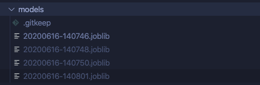

Pour ce TP, utiliser la branch 5_starting_artifacts
git checkout 5_starting_artifacts
Pour l'instant, les modèles sont sauvegardés par la fonction train_model.
Ils possèdent le même nom de fichier, ce qui signifie que chaque entraînement produit un modèle mais que le modèle ainsi produit écrase le précédent 😕.
Ceci est problématique pour des raisons
Un moyen de distinguer un modèle d'un autre à chaque entraînement est d'intégrer un identifiant unique à son nom.
Un moyen simple d'y parvenir est d'utiliser un horodatage.
L'objectif de ce TP est de modifier le nom du modèle généré en intégrant un timestamp au format YYYYMMDD-HHMMSS (
'%Y%m%d-%H%M%S'
).
Exécuter plusieurs entraînements devrait produire plusieurs modèles identifiables comme ceci dans votre model registry:
